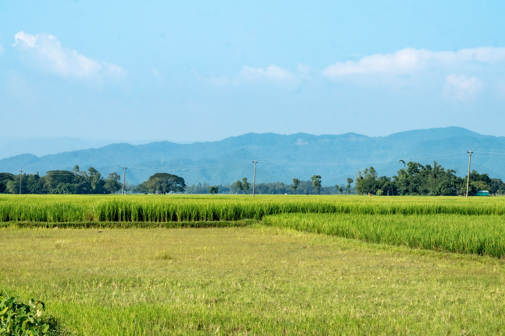

হালুয়াঘাট
ময়মনসিংহের উত্তর সীমান্তে,যেখানে সবুজ প্রান্তর আর দূর পাহাড়ের নীল ছায়া একে অপরকে স্পর্শ করে,
সেখানেই দাঁড়িয়ে আছে এক বৈচিত্র্যময় জনপদ — হালুয়াঘাট। পাহাড়, নদী আর বহু জাতি-গোষ্ঠীর কৃষ্টির মেলবন্ধনে গড়ে ওঠা এই অঞ্চলটি বাংলাদেশের এক অনন্য সীমান্ত-প্রান্ত।

google